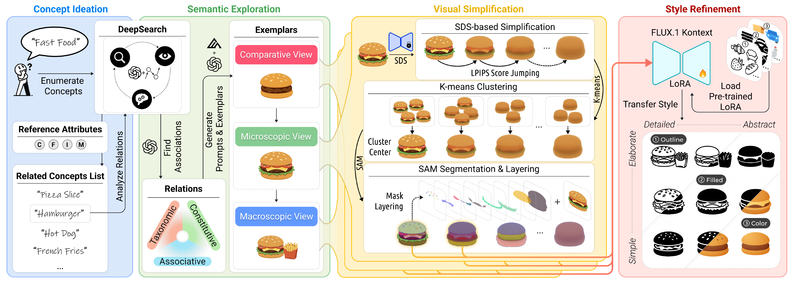
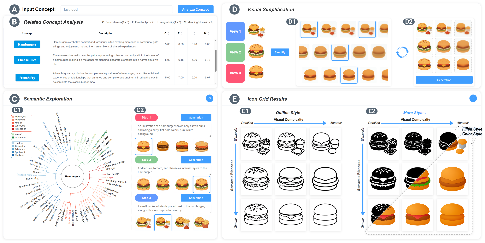
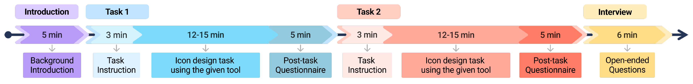
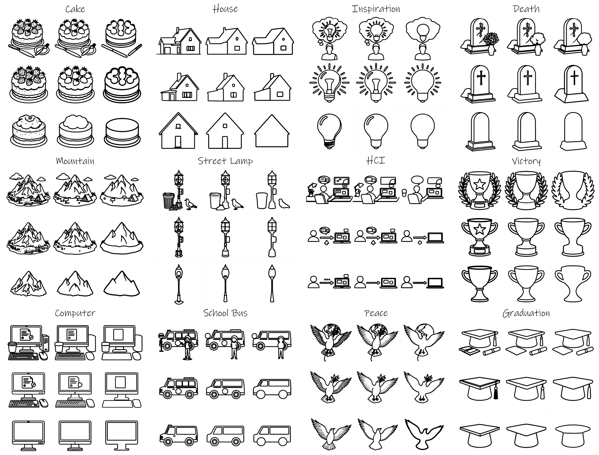

The Iconix pipeline

Overview of the Iconix pipeline. The pipeline consists of four stages: (a) Concept Ideation identifies related concepts from the input; (b) Semantic Exploration analyzes relations and constructs three-level prompts to generate image exemplars; (c) Visual Simplification transforms the exemplars into icon mask drafts of varying complexity; and (d) Style Refinement optimizes the drafts to generate multi-style icon grids.
The Iconix system
The Iconix system integrates a multi-stage pipeline to support designers in creating progressive and style-consistent icon grids. The user interface is structured into four main modules that guide the designer from initial concept exploration to the final selection of an icon grid.

The Iconix’s interface showcases an example of generated results for “fast food”. The system comprises five coordinated modules: (A) Input Concept; (B) Related Concept Analysis (showing candidate ratings); (C) Semantic Exploration (visualizing associations and prompts); (D) Visual Simplification; and (E) the Dual-Axis Icon Grid for comparing design trade-offs.
Evaluation Methods

The user study procedure. The study followed a within-subjects design where participants completed two design tasks using both Iconix and the Baseline, with the order of conditions and tasks counterbalanced to ensure fairness.
Results

Iconix generates style-consistent icon grids of varying complexity from user-specified concepts. The figure contains 12 concepts: the six on the left are concrete, and the six on the right are abstract. For each concept, icons are organized along two orthogonal dimensions: from top to bottom, semantic richness decreases (from elaborate to simple); from left to right, visual complexity decreases (from detailed to abstract).

A gallery of additional icon sets generated by Iconix. The examples demonstrate the system’s ability to produce diverse and coherent outcomes for a range of concrete (left) and abstract (right) concepts, which were selected from prior research and common use.
Reflection
In summary, this research proposes a novel progressive grid-based visual generation approach, leveraging semantic scaffolding to identify relevant analytical perspectives and subsequently synthesize them based on semantic richness and visual complexity. We present Iconix, an AI-assisted system designed to enhance creative ideation in icon design through structured semantic-visual continuums. Through a comprehensive evaluation, we demonstrate how semantic scaffolding and progressive simplification can facilitate abstract concept design in AIGC, enhancing creative workflows and visual ideation.